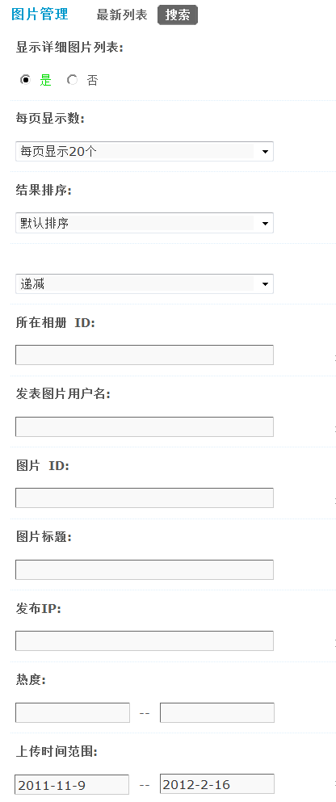

图片管理
通过图片管理功能，站长可以方便的搜索和管理用户上传的图片，批量图片管理用于删除图片使用，并且连同图片评论一同删除。
一、按指定条件进行搜索
操作路径：【后台】=>【内容】=>【图片管理】
管理员可以设置搜索条件，划定搜索范围，如下图所示：
1、显示详细图片列表： 选择“是”，则在搜索结果中列出符合条件的图片详细信息；选择“否”，则只会在结果中显示出符合条件的图片数量。
选择“是”的效果如下：
2、每页显示数：每页显示多少张图片。
3、结果排序：按照图片的上传时间、图片大小、热度进行递增或递减的排序进行显示。
4、所在相册ID：图片所在的相册 ID 号，多相册ID中间，请用半角逗号”,”分割。
5、发表图片用户名：按上传图片的用户进行搜索，若有多个，用‘,’分割。
6、图片ID：已经上传的图片 ID 号，多图片 ID 中间请用半角逗号”,” 分割。
7、图片标题：按照图片的标题关键字进行搜索。
8、发布IP：按照上传图片的IP地址进行搜索，可使用通配符’*’对某网段进行筛选，慎用！
9、热度：按照上传图片的热度值范围进行搜索。
10、上传时间范围：格式 yyyy-mm-dd，不限制请输入0。
点击‘提交’后即可进行搜索。
二、删除筛选后的记录
1、若选择了‘显示详细图片列表’，则可以看到所选择的图片的详细信息，包括相册封面、图片大小、相册名、上传作者、上传时间，还可以查看对该图片的详细评论。此时可以勾选相应的复选框决定是否删除。
2、可以单独删除一个或者几个，也可以全部批量删除。
3、点击‘提交’即可删除筛选的所有图片。